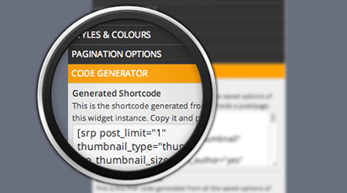

Thank you for purchasing the Special Recent Posts PRO Edition plugin for Wordpress. If you have any questions that are beyond the scope of this help file, please feel free to email via my user page contact form here. Thanks so much!
| Author: | Luca Grandicelli |
| Author URL: | lucagrandicelli.co.uk |
| Current Plugin Version: | 3.0.6 |
| Latest Update | September 27, 2014 |
| Documentation Version: | 1.0.2 |
| Latest Update | September 27, 2014 |
Special Recent Posts PRO Edition (SRP PRO) is one of the most advanced Wordpress plugin to manage your posts with thumbnails. With an incredible easy configuration and a wonderful look, you're just a click away from setting up your awesome layout. It's the perfect solution for Web Magazines or just Simple Blogs and it comes with more than 120 Customization Options Available(*).
With an amazing & elegant interface, you can easilly configure your posts, set up your thumbnail types and sizes, apply advanced filter techniques and even paginate your results to achieve a fully working Wordpress Home Page, or if you wish, just a beautiful sidebar widget to show up your preferred posts.
Special Recent Posts PRO Edition uses a customized Wordpress loop to fetch your posts/pages based on each setting you set up in the widget/plugin options.
Manual installation is easy and takes fewer than five minutes.
In order for the Special Recent Posts PRO Edition plugin to work, these settings are required:
Here's the list of the stylesheets used. Both are located in the [PLUGIN FOLDER]/CSS directory.
| File Name | Description |
|---|---|
admin.css |
This is the stylesheet used to style all the admin parts of the Special Recent Posts PRO Edition. |
layout.css |
Here you can find all the CSS rules that apply throughout the entire SRP front-end layouts. |
By default, Special Recent Posts PRO Edition uses the wonderful CSS FlexBox Module to render responsively all the different layouts with proper alignments.
There are tons of options to modify quite everything about your posts layout, but if you need something more, you have to apply some CSS code.
Follow the instructions below to know how. (And if you feel brave enough to mess around with CSS, here's a complete guide to Flexbox.)
By default, SRP lets you change quite everything about the post layout like positioning the post title above the thumbnail, or even the thubnail above everythig else.
Everything has just an option in the relative widget panel.
But if you wish more customization, then you have to write some CSS code.
Here below you can find the list of the needed CSS classes to target when customizing your own layout.
/**
* --------------------------------
* THE WIDGET TITLE
* This is the class that holds the title of the widget.
* Usually you don't have to edit this element because is already done by Wordpress.
* --------------------------------
*/
.srp-widget-title {}
/**
* --------------------------------
* THE WIDGET CONTAINER
* This is the class that holds the entire widget container.
* --------------------------------
*/
.srp-widget-container {}
/**
* --------------------------------
* THE SINGLE POST
* This is the class that holds the entire single post container.
* Use this class to apply margins or padding between each post entry.
* --------------------------------
*/
.srp-widget-singlepost {}
/**
* --------------------------------
* THE THUMBNAIL BOX
* --------------------------------
*/
// This is the box that contains the thumbnail.
.srp-thumbnail-box {}
// This is the thumbnail link.
.srp-post-thumbnail-link {}
// This is just the thumbnail image.
.srp-thumbnail-box img {}
/**
* --------------------------------
* THE POST META BOXES
* --------------------------------
*/
// The post title.
.srp-post-title {}
// The post title link.
.srp-post-title-link {}
// The post author text.
.srp-post-author {}
// The post author URL Link.
.srp-post-author-url {}
// The post date text.
.srp-post-date {}
// The post category text.
.srp-post-category {}
// The post comments text.
.srp-post-comments {}
// The post comments link.
.srp-post-comments-link {}
// The post content text.
.srp-post-content {}
// The post tags.
.srp-post-tags {}
/**
* --------------------------------
* THE POST TITLE
* --------------------------------
*/
.srp-post-title {}
// The post title link.
.srp-post-title-link {}
/**
* --------------------------------
* THE POST CONTENT
* --------------------------------
*/
// The post stringbreak link.
.srp-post-stringbreak-link {}
// The post stringbreak image.
.srp-post-stringbreak-image {}
// The post stringbreak image link.
srp-post-stringbreak-link-image {}
So for example, if we want to reset the amount of space between the Post Title and the list of Post Meta we'll write as follows:
.srp-post-title {
margin: 0;
}
Another example: change the post title font size, its colour and add a little extra amount of space below:
.srp-post-title {
font-size: 18px;
color: #000;
margin-bottom: 10px;
}
Wanna remove that gray line between each post?
.srp-widget-singlepost {
border-bottom: none;
}
Special Recent Posts PRO Edition comes with great feature that lets users to insert the widget in all non-widget handled parts of their Wordpress theme.
Now you don't have to care anymore about manually building your own shortcode or PHP code, because everything is processed and generated by the “CODE GENERATOR” section in the widget panel. Just copy & paste the generated code into one of your Wordpress pages or PHP templates.
A special Ticket System is available to all those customers who purchased the Special Recent Posts PRO Edition.
Help Desk Support
http://specialrecentposts.ticksy.com/
F.A.Q are available at:
http://specialrecentposts.ticksy.com/faqs/
Once again, thank you so much for purchasing the Special Recent Post PRO Edition. As I said at the beginning, I'd be glad to help you if you have any questions relating to this plugin. No guarantees, but I'll do my best to assist. If you have a more general question relating to the plugins on CodeCanyon, you might consider visiting the forums and asking your question in the "Item Discussion" section.